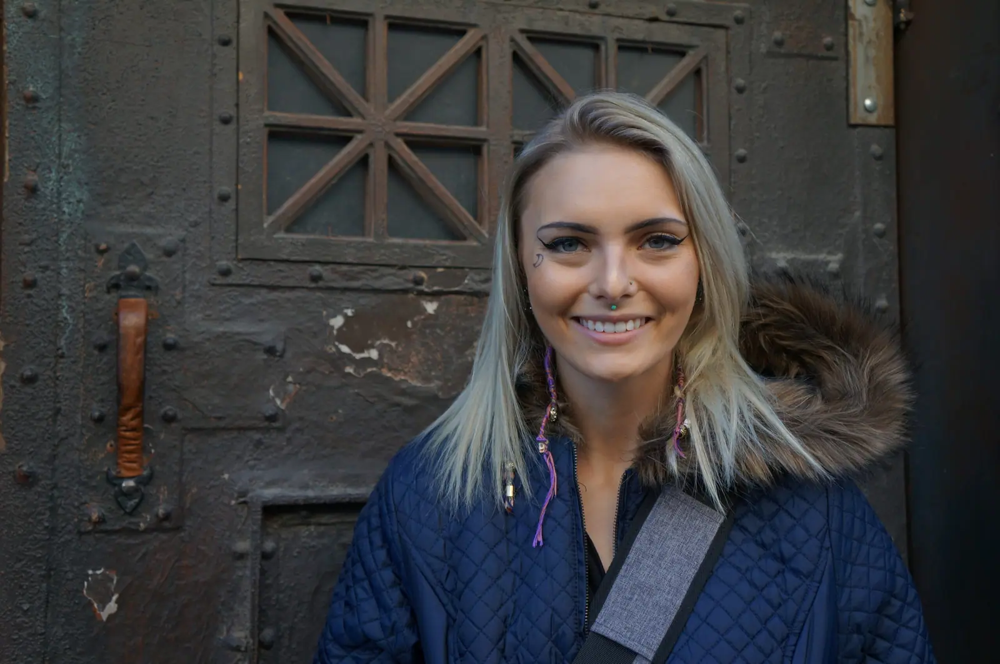
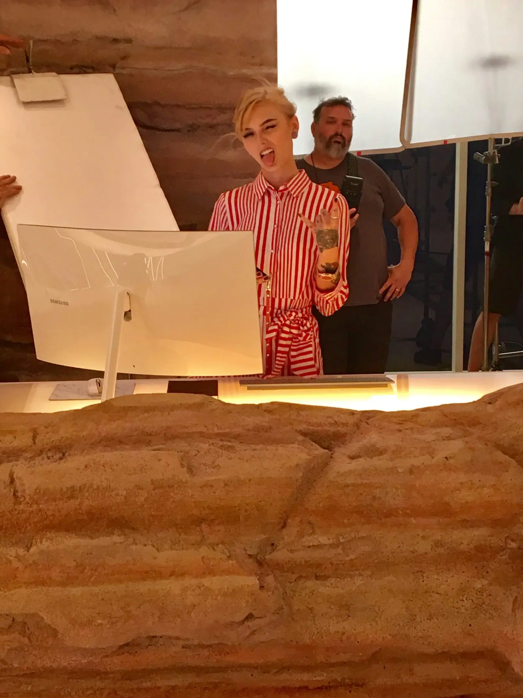
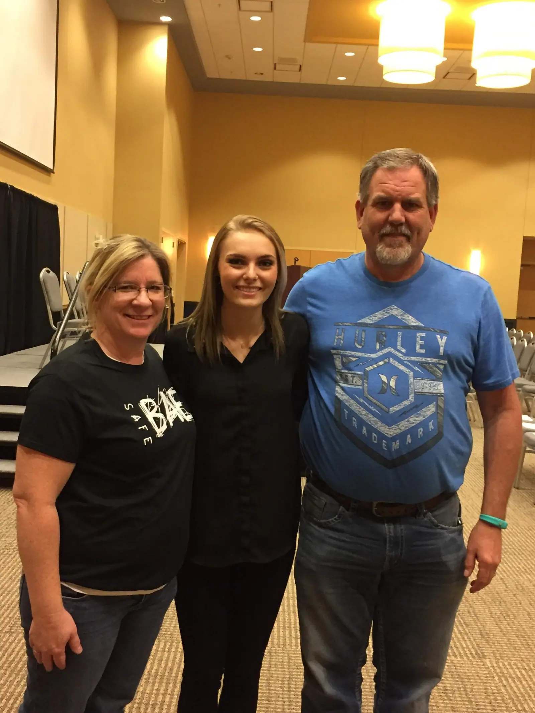
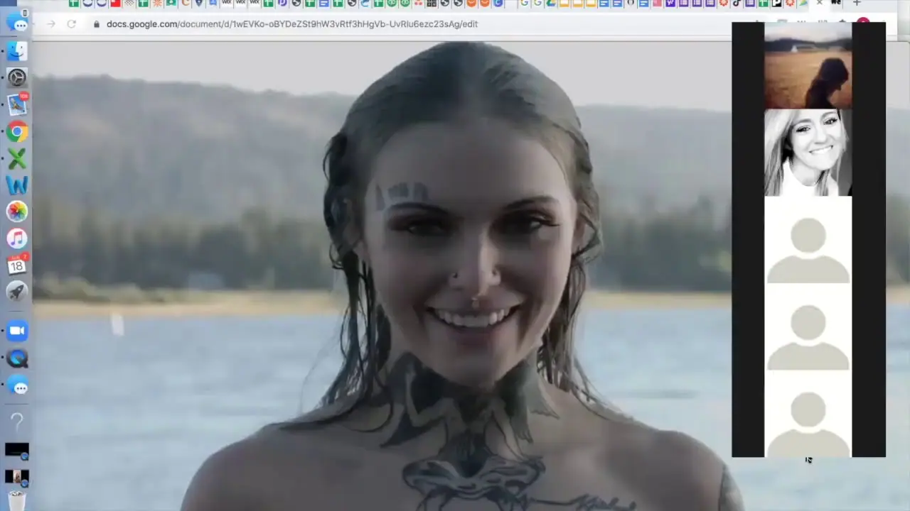
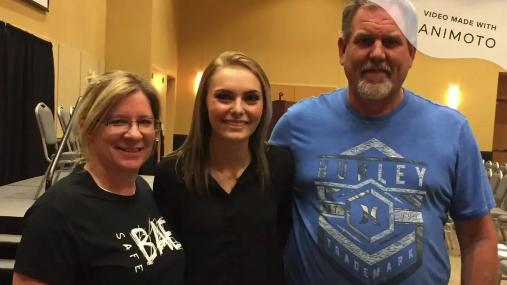

In memoriam
#ForDaisy
Daisy Coleman·March 30, 1997 – August 4, 2020
This August marks six years since the passing of Daisy Coleman, SafeBAE’s co-founder. As a teenage survivor, Daisy shared her story in the documentary Audrie & Daisy, speaking openly about what had happened to her and bringing the realities facing young survivors to a national audience. Her vision became the foundation of SafeBAE and helped ignite our youth-led movement.

“All the organizing that happened after Daisy spoke out may not necessarily be a direct result but is certainly a ripple effect: the new campus anti-rape movement, followed by the backlash over Brock Turner, followed by the sudden ubiquity of MeToo as both a hashtag and a rallying cry.”Read “What Daisy Coleman Changed” in The Cut ↗
Daisy was more than her advocacy.
She was a tattoo artist whose work people still carry with them, and she was loved deeply by her family and friends.
Her example still guides how we show up for students, and her story is carried forward by us and by communities across the country.

#ForDaisyTattoos & HealingDaisy’s art, and tattoos as one path some survivors take to reclaim their bodies.

#ForDaisy Memorial Tribute Wall
Daisy reached people she never met.
Survivors who saw themselves in her story, students who felt less alone because she spoke first, parents and educators who changed how they show up for young people because of her. When she passed, we collected tribute messages at her memorial service, more than 700 of them, and we have held them close ever since.
Her reach hasn’t stopped. Every year, hundreds of people still find their way to SafeBAE through Daisy’s story and tell us she is the reason they came to this work. Six years later, she is still bringing people in. This year we brought those messages together in one place.
Daisy, you changed so many lives for the utmost better. I’m eternally grateful for your strength. Thank you 🧡
You are such an inspiration. Thank you for sharing your story with us while you were on earth. Much love.
Daisy, i’m sorry you couldn’t find peace. i hope you are now at peace. you deserve it. you deserved so much more then what this world gave you. i’m going to miss you so much, you were my rock. i love you
You fought so hard, sweet girl. You did us all proud. Go well. You were a bright light and you will be dearly missed.
Thank you Daisy for your immense courage and strength. Your story changed my life, truly. Thank you for showing all sides of healing. I wish you peace and rest. Thank you ❤️
Thank you for moving all the mountains you have and doing everything you did to help other victims. Fly high sweet Angel. You're now at peace.
Sending you so much lovel, I hope you’re no longer in pain. ❤️
You will be so missed Daisy.
Heaven has gained another angel :)
Daisy saved my life on multiple times there was a point where i was going threw so much and i decided to message her and she actually cared and helped if it wasn't for Daisy i probably wouldn't be alive right now
Thank you for sharing your heart and your story. Your strength grounds me every single day to believe in myself and other survivors. You showed me we are whole and healing and taking the power back.
Thank you for always being a source of light for survivors. Your story has resonated with me for so long, and it will continue to do so. Rest Easy you sweet sweet angel
Daisy, because of your courage, strength and advocacy, i was inspired to use my story and voice to help and advocate for others. It was because of strong, powerful voices like yours that was able to start my path to healing and led me to advocate for reform and help other survivors. I will never be able to thank you enough for the inspiration you gave to so many of us survivors, or thank you for helping fuel the fire to my passion of helping others. Because of powerful voices like yours, I will be a trauma therapist in a few years helping other trauma survivors professionally. I hope you are resting peacefully knowing the amazing things you’ve done for so many people. Thank you.
I wish I could tell you how much you mattered. You helped change the world.
Your work has saved so many lives; the legacy will continue.....
Thank you for your courage and your advocacy. Seeing you in the Netflix documentary Audrie and Daisy gave me hope that I could eventually survive and move on from my assault and abusive relationship. Rest Easy Daisy
Thank you for fighting as long as you did for those of us who weren’t ready yet. Thank you for opening your heart for so many of us to be inspired by. Your legacy lives on and hope still wins.
Daisy!!! You have lit a fire in me and I’m going to keep this fire you gave me and hope I can also help women in need. You’re an inspiration. I love you.
“Our love lays with you, our souls fly with you.” 🕊🤍
You will always be such an inspiration, I’m so proud of how strong you were. I’m sorry for everything you went through, you deserved so much better in life. We won’t forget you, RIP Angel. Forever in my heart. I love you Daisy.
Daisy, you were the strongest, most beautiful woman! I hope it’s as beautiful up there as you are!
You gave me the courage to use my story to make a difference. I wasn’t sure I wanted to go into this type of work, but you inspired me. Now I’ve been teaching sexual violence prevention and survivor advocacy for 4 years. People don’t know how hard it is to use your pain to create change, but we do it anyways, and it makes us brave. Thank you. Rest In Peace and rest in Power.
She brought strength to more survivors than she could ever realize. Thank you for showing me and everyone we weren't alone in this fight. Lots of love to everyone effected by Daisy and her legacy.
I didn’t know you personally, but you made an impact on me, as an advocate for survivors, as a high school teacher, and as a human being. Thank you for shining your light. Rest peacefully.
Daisy, thank you for giving me my voice and encouraging me to share my story. Sharing my story has helped with my healing journey. I will never forget the advice you gave me. I would not be the advocate I am today without you. Thank you for everything you have done for survivors. I promise to continue to fight for survivors always.
Beautiful Daisy, You witnessed such darkness in this world but your inner light shone so bright and will continue to do so for many many years. You truly turned dirt to gold and the wisdom you passed on will be forever cherished! What an inspirational, strong, beautiful human you were. Sending prayers and lots of love and light from my family in Ireland to yours in America and the community you created worldwide💝🙏
You and Charlie were some of my very first friends when we were little. After I told you about my trauma, you said to not let it get in the way of my future. I haven’t and I still won’t. And when the pain of the memories got too strong, you always calmed me down. I will miss talking to you and I will never forget all of the kind things you said to me. I love and miss you so much, Cat.
I can’t fully put into words how much your story meant to me. I loved your fire, passion, eloquence and quirkinesses. I’m sorry the world didn’t keep you safe. I’m sorry it hurt so much. I hope you are in perfect peace, because that’s what you deserve. Thank you for everything you did for survivors, we will never forget you.
You truly touched my heart with your incredible story, your courage to speak up and your wonderful soul, you’re an angel, I know God has you next to him and hopefully one day I can be there with you too.
I admire and will carry on the strength and bravery you exuded in our brief conversations. I wish this gives you peace.
If Daisy touched your life
If you knew her, or knew her only through her work, we invite you to add your own message for Daisy.
Remembering Daisy
The words and images from those days
Here is the statement we shared with our community on the day Daisy passed, with the recordings and photos from those days, including her virtual memorial service. Together they hold both the grief and the celebration of her life. We’ve kept everything here for anyone who wants to return to it, including people who are only now finding Daisy’s story.
Read the statement we shared after Daisy’s passing+
DAISY COLEMAN
March 30th, 1997 – August 4th, 2020
Through our shock and sadness, we are releasing a statement about our loss of Daisy. As all of our supporters know, Daisy has fought for many years to both heal from her assault and prevent future sexual violence among teens. She was our sister in this work and much of the driving force behind it. We were not just a non-profit team, but a family. We are shattered and shocked by her passing from suicide. She had been in EMDR therapy for 2 years, working on her triggers and healing from the many traumas in her life. She had many coping demons and had been facing and overcoming them all, but as many of you know, healing is not a straight path or any easy one. She fought longer and harder than we will ever know. But we want to be mindful of all the young survivors who looked up to her. Please know that above ALL ELSE, she did this work for you. She loved talking to young people about changing the culture and taking care of one another. Much of her healing came from each of you. She was so proud of the work we’ve done and loved seeing so many fierce young activists push for change in their schools and among their friends.
She would want young survivors to know they are heard, they matter, they are loved, and there are places for them to get the help they need. And she would want everyone else – peer allies, educators, parents, legislators, religious leaders – to come together to help stop sexual violence and help save teen lives.
As advocates we know survivors of sexual assault are 10 times more likely to attempt suicide than those who haven’t experienced sexual assault, and that is why we will keep dedicating ourselves to this work in her legacy. There’s no question that she would want that.
All of our love,
SafeBAE
If you are struggling, you are heard and you matter. Call or text 988 any time, or text HOME to 741741.
In Memory of Daisy Coleman
Remembrance
Daisy’s Virtual Memorial ServiceWatchDaisy’s Virtual Memorial Service
August 18, 2020
Photos for RemembranceWatchPhotos for Remembrance
Picture collection, 2020Photos for remembrance
Daisy, in the pictures people gathered in her honor
Podcasts
Daisy’s voice, and her legacy
Recorded in April 2017 and re-released to celebrate Daisy’s life and mourn her passing, honoring her commitment to ending sexual assault and living her life as a survivor to the fullest.
Prosecutors Kathryn Marsh and Melissa Hoppmeyer talk with Aela Mansmann about Daisy Coleman’s legacy, why young people must lead this movement, and healing through unconventional means.
For Daisy: Before Anyone Else
Certified Peer Educator Training
The training is offered in memory of our co-founder, Daisy Coleman, whose vision and leadership continue to inspire SafeBAE’s mission and young people nationwide.
Your donation goes a long way
Keep prevention free for every student.
Your donation makes an immediate impact by keeping consent education and resources free for students and schools across the US.